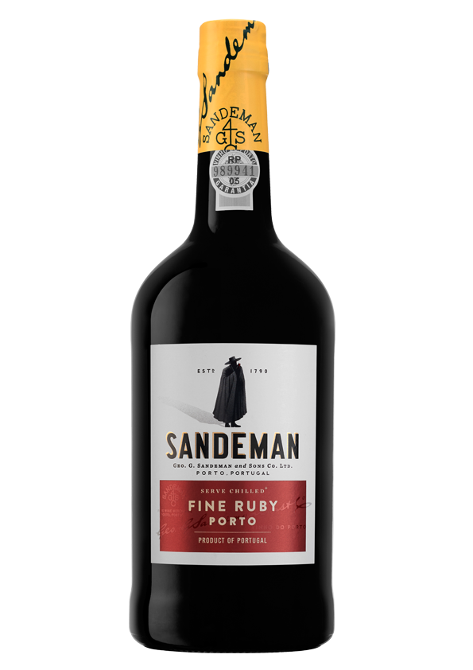
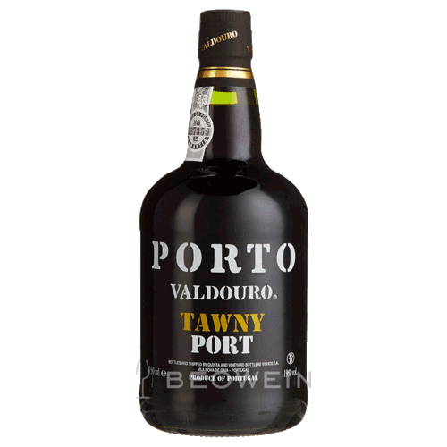
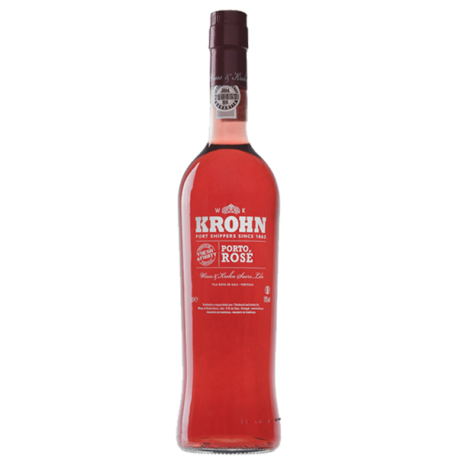

Port Wine
The God's Wine
Region and Production
Port is produced from grapes grown and processed in the demarcated Douro region.
The wine produced is then fortified by the addition of a neutral grape spirit known as aguardente to stop the fermentation, leaving residual sugar in the wine, and to boost the alcohol content.
The wine is then stored and aged, often in barrels stored in a lodge (meaning "cellar") as is the case in Vila Nova de Gaia, before being bottled.
Styles
Ruby
Ruby port is the least expensive and most extensively produced type of port. After fermentation, it is stored in tanks of concrete or stainless steel to prevent oxidative aging and preserve its bright red color and full-bodied fruitiness. The wine is usually blended to match the style of the brand to which it is to be sold. The wine is fined and cold filtered before bottling and does not generally improve with age, although premium rubies are aged in wood from four to six years
Tawny
Tawny ports are wines usually made from red grapes that are aged in wooden barrels exposing them to gradual oxidation and evaporation. As a result of this oxidation, they mellow to a golden-brown color. The exposure to oxygen imparts "nutty" flavours to the wine, which is blended to match the house style. They are sweet or medium dry and typically consumed as a dessert wine, but can also pair with a main course.
Rose
Rose port is a very recent variation on the market, first released in 2008 by Poças and by Croft, part of the Taylor Fladgate Partnership. It is technically a ruby port, but fermented in a similar manner to a rosé wine, with a limited exposure to the grape skins, thus creating the rose color.